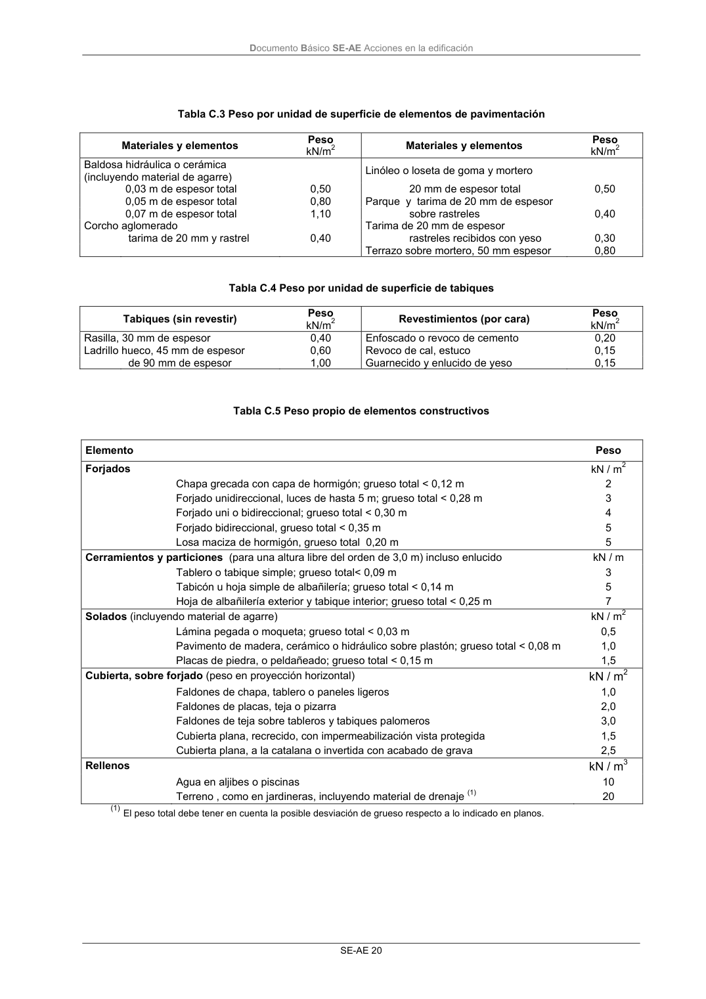

DB-SE-AE · Página 24 · versión 2009-04
SHA256: 26116e5088955f0c6963a6187270cad282e1e7bf5a53a90f695c8fa50b4e4487 · página física 24 de 46 · métodos de encabezado
solo si están cotejados.
Formatos: Markdown · JSON de bloques · PDF p. 24 · imagen PNG
Documento Básico SE-AE Acciones en la edificación SE-AE 20 Tabla C.3 Peso por unidad de superficie de elementos de pavimentación Materiales y elementos Peso kN/m2 Materiales y elementos Peso kN/m2 Baldosa hidráulica o cerámica (incluyendo material de agarre) Linóleo o loseta de goma y mortero 0,03 m de espesor total 0,50 20 mm de espesor total 0,50 0,05 m de espesor total 0,80 Parque y tarima de 20 mm de espesor 0,07 m de espesor total 1,10 sobre rastreles 0,40 Corcho aglomerado Tarima de 20 mm de espesor tarima de 20 mm y rastrel 0,40 rastreles recibidos con yeso 0,30 Terrazo sobre mortero, 50 mm espesor 0,80 Tabla C.4 Peso por unidad de superficie de tabiques Tabiques (sin revestir) Peso kN/m2 Revestimientos (por cara) Peso kN/m2 Rasilla, 30 mm de espesor 0,40 Enfoscado o revoco de cemento 0,20 Ladrillo hueco, 45 mm de espesor 0,60 Revoco de cal, estuco 0,15 de 90 mm de espesor 1,00 Guarnecido y enlucido de yeso 0,15 Tabla C.5 Peso propio de elementos constructivos Elemento Peso Forjados Chapa grecada con capa de hormigón; grueso total < 0,12 m Forjado unidireccional, luces de hasta 5 m; grueso total < 0,28 m Forjado uni o bidireccional; grueso total < 0,30 m Forjado bidireccional, grueso total < 0,35 m Losa maciza de hormigón, grueso total 0,20 m kN / m2 2 3 4 5 5 Cerramientos y particiones (para una altura libre del orden de 3,0 m) incluso enlucido kN / m Tablero o tabique simple; grueso total< 0,09 m Tabicón u hoja simple de albañilería; grueso total < 0,14 m Hoja de albañilería exterior y tabique interior; grueso total < 0,25 m 3 5 7 Solados (incluyendo material de agarre) kN / m2 Lámina pegada o moqueta; grueso total < 0,03 m Pavimento de madera, cerámico o hidráulico sobre plastón; grueso total < 0,08 m Placas de piedra, o peldañeado; grueso total < 0,15 m 0,5 1,0 1,5 Cubierta, sobre forjado (peso en proyección horizontal) kN / m2 Faldones de chapa, tablero o paneles ligeros Faldones de placas, teja o pizarra Faldones de teja sobre tableros y tabiques palomeros Cubierta plana, recrecido, con impermeabilización vista protegida Cubierta plana, a la catalana o invertida con acabado de grava 1,0 2,0 3,0 1,5 2,5 Rellenos kN / m3 Agua en aljibes o piscinas Terreno , como en jardineras, incluyendo material de drenaje (1) 10 20 (1) El peso total debe tener en cuenta la posible desviación de grueso respecto a lo indicado en planos.
